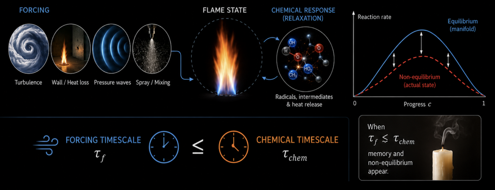
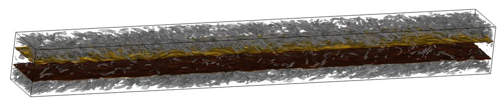
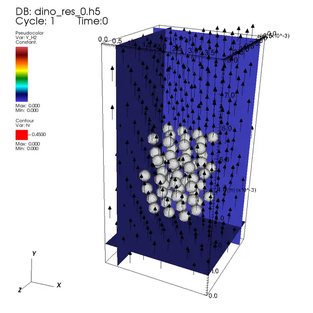

AI-assisted reacting flows for sustainable energy and propulsion
My research develops AI-assisted approaches for reacting flows in sustainable energy and propulsion. I combine high-fidelity Direct Numerical Simulations with physics-based AI to (1) identify causal mechanisms behind intermittent rare events; (2) learn dynamic non-Markovian manifolds from multiscale reactive-flow dynamics; and (3) construct accurate, interpretable, and transferable models for practical energy and propulsion systems.
- sustainable energy
- propulsion
- direct numerical simulation
- rare-event causality
- physics-based AI
- dynamic non-Markovian manifold
Education and Research Experience
Research experience
-
2026
Visiting Professor
Kyoto University, Japan. Host: Prof. Ryoichi Kurose.
-
2024
Visiting Professor
CERFACS, France. Host: Prof. Bénédicte Cuenot.
-
2021-present
Group Leader
Otto von Guericke University Magdeburg, Germany.
Education
-
2015-2021
Ph.D. / Dr.-Ing.
Max Planck Institute for Dynamics of Complex Technical Systems, Germany.
Otto von Guericke University Magdeburg, Germany.
-
2013-2015
M.Sc.
King Abdullah University of Science and Technology, Saudi Arabia.
-
2009-2013
B.Eng.
Huazhong University of Science and Technology, China.
Research themes
Non-equilibrium: fast reaction (chemical equilibrium) assumption fails when the timescale of other physical process (e.g. convection, diffusion ...) becomes comparable to or even smaller than the flame timescale.

Reactive flow constitutes the physical foundation for sustainable energy and propulsion. Its multiscale nature introduces non-equilibrium processes that generate intermittent rare events, including extinction, reignition, abnormal pollutant emissions, extreme curvature, strain, and burning rates, making prediction and modeling especially challenging.
Reacting flow physics
High-fidelity reacting flow database
Wall-induced
Flame-wall interactions
Small timescale: wall thermal diffusion.

Journal articles 6
Turbulent flame-wall interaction: dynamics of flame thickness and combustion regime.
Journal of Fluid Mechanics. Paper
A flame marker for ammonia/hydrogen/air premixed flames during flame/wall interactions.
Proceedings of the Combustion Institute. Paper
Flame dynamic insights into emission characteristics of NH3/H2/air combustion in turbulent boundary layers.
Combustion and Flame. Paper
Effect of differential diffusion on head-on quenching of premixed NH3/H2/air flames within turbulent boundary layers.
Proceedings of the Combustion Institute. Paper
A numerical study of the stagnation flow premixed lean hydrogen/air flame stabilized at the wall with the focus on NO emission and flame-solid interaction.
Journal of Thermal Science. Paper
Numerical investigation on the Head-on Quenching (HoQ) of laminar premixed lean to stoichiometric ammonia-hydrogen-air flames.
Flow, Turbulence and Combustion. Paper
Interphase heat/mass-transfer-induced
Interphase heat/mass transfer
Small timescale: particle size/shape evolution and fluid-solid thermal/species exchange.

Journal articles 4
A generalized memory effect in fluid/flame dynamics due to unsteady events.
Particuology. Paper
Direct numerical simulations of polypropylene gasification in supercritical water.
Physics of Fluids. Paper
Fully resolved direct numerical simulation of single coal particle gasification in supercritical water.
Fuel. Paper
Interface-resolved direct numerical simulations of interphase momentum, heat, and mass transfer in supercritical water gasification of coal.
Physics of Fluids. Paper
Flow-induced
High-Karlovitz-number flames
Small timescale: Kolmogorov-scale turbulent motion.
 High Ka / High Re
High Ka / High Re
 High Ka / Low Re
High Ka / Low Re
 Low Ka / High Re
Low Ka / High Re
 Low Ka / Low Re
Low Ka / Low Re
Journal articles 7
Local extinction characteristics of turbulent premixed H2/air flame under sub-atmospheric pressure conditions: a DNS study.
Combustion and Flame. Paper
Effects of molecular diffusion modeling on turbulent premixed NH3/H2/air flames.
Proceedings of the Combustion Institute. Paper
Direct numerical simulations of hotspot-induced ignition in homogeneous hydrogen-air pre-mixtures and ignition spot tracking.
Flow, Turbulence and Combustion. Paper
Detached eddy simulation (DES) of a turbulent premixed flame stabilized on a bluff body.
Proceedings in Applied Mathematics and Mechanics. Paper
Effects of cryogenic temperature on turbulent premixed hydrogen/air flames.
Proceedings of the Combustion Institute. Paper
Direct numerical simulations of turbulent premixed cool flames: Global and local flame dynamics analysis.
Combustion and Flame. Paper
Temperature effect on turbulent burning velocity of lean premixed hydrogen/air flames.
Physics of Fluids. Paper
Mixture-induced
Stratified flames
Small timescale: species and molecular diffusion.
Journal articles 4
Reactivity stratified flame to enhance ammonia combustion with hydrogen: Effects of temperature, pressure, downstream mixture, and molecular diffusion.
Proceedings of the Combustion Institute. Paper
Revisiting performance of reactivity stratification with hydrogen addition for ammonia combustion.
Proceedings of the Combustion Institute. Paper
DNS study on reactivity stratification with prechamber H2/air turbulent jet flame to enhance NH3/air combustion in gas engines.
Fuel. Paper
Transient ignition of premixed methane/air mixtures by a pre-chamber hot jet: A DNS study.
Flow, Turbulence and Combustion. Paper
Reaction-induced
Flames near flammability limits
Large timescale: flame propagation.
Journal articles 1
Ultra-lean diffusion-controlled 2D premixed hydrogen/air flames.
Proceedings of the Combustion Institute. Paper
Porous-matrix-induced
Porous-matrix reacting transport
Small timescale: pore-scale transport and matrix heat/mass exchange.
Numerical methodology
Numerical algorithm and AI methodology
Developing high-order numerical algorithms, interface-resolved methods, reduced-order chemistry, dynamic non-Markovian manifold learning, and physics-based AI for scalable reacting-flow simulation and prediction.
Learning and reduced-order modeling
AI methodology
Physics-based learning, dynamic non-Markovian manifolds, neural reduced-order models, and multiscale data decomposition.
Journal articles 5
Chemical reaction neural networks for semi-detailed kinetics including the influence of inorganics and secondary reactions during cellulose pyrolysis.
Energy Conversion and Management. Paper
Data-driven discovery of heat release rate markers for premixed NH3/H2/air flames using physics-informed machine learning.
Fuel. Paper
Efficient premixed turbulent combustion simulations using flamelet manifold neural networks: A priori and a posteriori assessment.
Combustion and Flame. Paper
Identification and analysis of very-large-scale turbulent motions using multiscale proper orthogonal decomposition.
Physical Review Fluids. Paper
On-the-fly artificial neural network for chemical kinetics in direct numerical simulations of premixed combustion.
Combustion and Flame. Paper
Interface-resolved algorithms
Immersed boundary method
Ghost-cell formulations for incompressible, compressible, and reacting flows with conjugate interphase transport.
Journal articles 4
A ghost-cell immersed boundary method for reacting flow simulations with conjugate heat transfer.
Journal of Computational Physics. Paper
A directional ghost-cell immersed boundary method for low Mach number reacting flows with interphase heat and mass transfer.
Journal of Computational Physics. Paper
A directional ghost-cell immersed boundary method for incompressible flows.
Journal of Computational Physics. Paper
An improved ghost-cell immersed boundary method for compressible flow simulations.
International Journal for Numerical Methods in Fluids. Paper
Physics-informed diagnostics
Heat release rate marker
Optimal chemical observables that robustly identify heat release in premixed reacting-flow fields.
Efficient chemical kinetics
Chemistry reduction
Accurate, low-stiffness kinetic mechanisms tailored for high-fidelity turbulent combustion simulations.
Journal articles 2
A reduced kinetic mechanism for ammonia/hydrogen mixtures with alleviated stiffness and high accuracy tailored for high-fidelity numerical simulations.
Applications in Energy and Combustion Science. Paper
A dedicated reduced kinetic model for ammonia/dimethyl-ether turbulent premixed flames.
Combustion and Flame. Paper
Engineering application
Sustainable energy and propulsion application
Applying high-fidelity datasets and predictive models to hydrogen and ammonia combustion, pre-chamber ignition, flame-wall interactions, particle conversion, spray systems, and low-carbon propulsion technologies.
Other research works
Numerical methods and enabling studies
Interface-resolved algorithms, immersed-boundary methods, flow diagnostics, and simulation infrastructure supporting reactive-flow DNS.
Journal articles 5
Interaction of a turbulent flame with the very-large-scale structures in a channel flow.
European Journal of Mechanics / B Fluids. Paper
Direct numerical simulation of the transitional airflow in a patient-specific larynx during exhalation.
Computers and Fluids. Paper
Autonomous particles for in-situ-friendly flow map sampling.
Proceedings of the Conference on Vision, Modeling, and Visualization. Paper
Combustion mode and mixing characteristics of a reacting jet in crossflow.
Energy & Fuels. Paper
Direct numerical simulation of turbulent spray combustion in the SpraySyn burner: Impact of injector geometry.
Flow, Turbulence and Combustion. Paper
Projects, teaching, and recognition
Third-party funding
-
DFG Priority Program 2419 (AddBluff4NH3/H2)
Additively manufactured bluff body burner investigated by DNS and experiments for fuel-flexible, stable, and safe NH3/H2 combustion.
- Date
- 2024-2027
- Amount
- €645,300
- Role
- Co-PI, Project Coordinator, Supervision of Dr. Guan
-
DFG Project TH881/38-1 (DADOREN)
Direct numerical simulations and scientific AI analysis of ignition and combustion in realistic pre-chamber/engine systems with NH3/H2 blend fuel.
- Date
- 2023-2026
- Amount
- €265,600
- Role
- Co-PI, Project Coordinator, Project Manager
-
German Excellence Research Initiative SmartProSys, Project 06
Thermochemical decomposition under supercritical conditions.
- Date
- 2022-2024
- Amount
- €132,200
- Role
- Person in charge
-
European Regional Development Fund, ZS/2021/10/161306
Direct numerical simulations of prechamber hot jet ignition.
- Date
- 2021-2022
- Amount
- €65,000
- Role
- Person in charge
-
DFG Priority Program 1881 (TH881/30-1)
DNS and visual analysis of superstructures in turbulent channels with mixing by parallel injection.
- Date
- 2020-2022
- Amount
- €263,400
- Role
- Proposal preparation, Project Manager
-
European Regional Development Fund, ZS/2017/01/83590
Reman-Gasmotor mit Vorkammerzündung.
- Date
- 2018-2020
- Amount
- €183,200
- Role
- Person in charge
JUWELS and SuperMUC-NG allocations
-
Direct Numerical Simulation of gasification and pyrolysis of polypropylene
- Date
- 2026-2028
- System
- SuperMUC-NG
- Allocation
- 24.73 Mcore-h and 900 GPU-h
- Role
- Proposal preparation, Project Manager
-
Direct Numerical Simulation of Pyrolysis of Biomass Particles
- Date
- 2026-2027
- System
- JUWELS
- Allocation
- 17 Mcore-h
- Role
- Proposal preparation, Project Manager
-
Direct numerical simulations of ignition and combustion in realistic pre-chamber/engine systems with NH3/H2 blend fuel
- Date
- 2023-2027
- System
- JUWELS
- Allocation
- 55.7 Mcore-h
- Role
- PI, Project initiation, Project Manager
- Recognition
- NIC Excellence Project 2025
-
Study of turbulent flame properties for ammonia blended with DME by Direct Numerical Simulation
- Date
- 2022-2024
- System
- SuperMUC-NG
- Allocation
- 10.52 Mcore-h
- Role
- Proposal preparation, Project Manager
-
Sound Induced by Oscillating Flows in a Moving Airway
- Date
- 2021-2024
- System
- JUWELS
- Allocation
- 19.5 Mcore-h
- Role
- Proposal preparation
-
DNS and Visual Analysis of Superstructures in Turbulent Channels with Mixing by Parallel Injection
- Date
- 2020-2023
- System
- JUWELS
- Allocation
- 35 Mcore-h
- Role
- Project initiation, Proposal preparation, Project Manager
-
Modulation of Turbulent Properties in a Spray Flame Burning n-Heptane: Direct Numerical Simulation
- Date
- 2017-2022
- System
- SuperMUC-NG
- Allocation
- 88.6 Mcore-h
- Role
- Proposal preparation, Project Manager
Advanced Fluid Dynamics and CFD
-
Advanced Fluid Dynamics
- Full lectureship
- 04/2026-07/2026; 04/2025-07/2025
- Lectureship
- 04/2024-07/2024
-
Computational Fluid Dynamics
- Full lectureship
- 10/2025-02/2026; 10/2024-02/2025
- TA + part lectureship
- 04/2024-07/2024; 10/2023-02/2024
- Teaching assistant
- 04/2023-07/2023
Honors, awards, and scholarships
-
JSPS Fellowship
- Year
- 2026
- Country
- Japan
-
NIC Excellence Project
- Year
- 2025
- Country
- Germany
- Role
- PI and Project Manager
-
summa cum laude Ph.D. thesis
- Year
- 2021
- Country
- Germany
-
Chinese Government Award for outstanding self-financed students abroad
- Year
- 2020
- Country
- China
-
IMPRS Scholarship, Max Planck Institute
- Year
- 2015
- Country
- Germany
-
KAUST Research Scholarship
- Year
- 2013
- Country
- Saudi Arabia
-
The Lloyd’s Register Educational Trust Scholarship
- Year
- 2012
- Country
- United Kingdom
-
National Scholarship
- Year
- 2010
- Country
- China
Contact
I welcome conversations about non-equilibrium reacting flows, DNS, ammonia/hydrogen combustion, high-Ka flames, flame-wall interaction, and scientific AI.